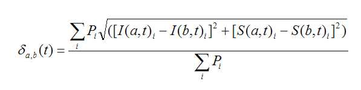
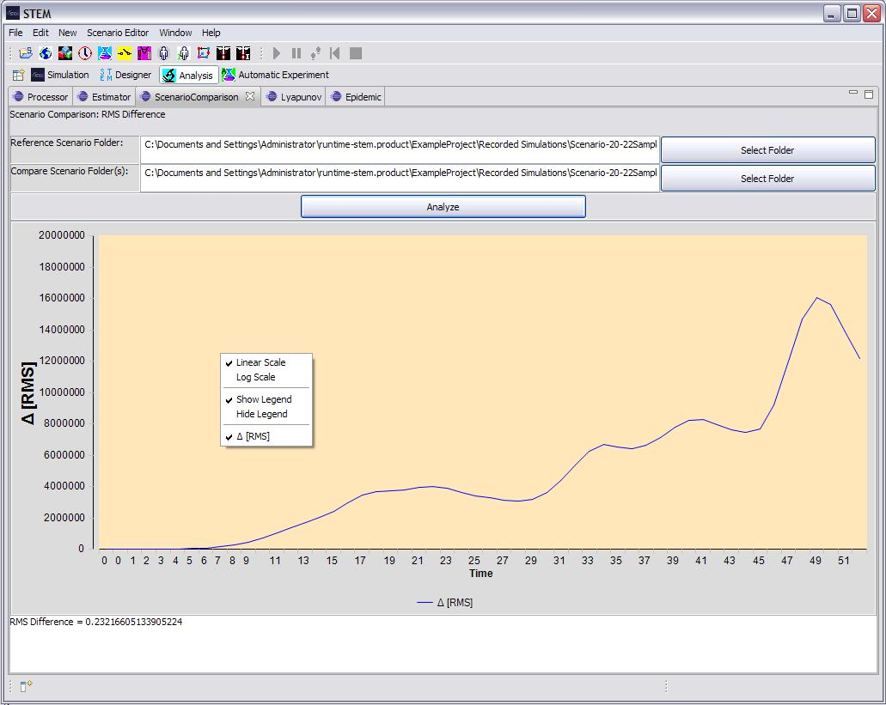

The Scenario Comparison View allows a user to compare two data sets
and to measure the time varying Root Mean Square (RMS) difference between the
aggregate epidemic data.
The data may be real data or the results from one or more completed simulations.
The algorithm used to measure the RMS difference
da,b(t) between two scenarios
‘a’ and ‘b’
at time t averaged over all locations (i) is:

Note that each location ‘i’ is weighted by the local population Pi so more populous locations contribute more to the measurement. The method assumes the scenarios a,b each cover the same set of location {i} which is true in this case. The RMS difference is evaluated only at locations that have a non-zero rate of infection at some time t. If, for example, a comparison is made of two scenarios involving the entire planet but the epidemic in question is localized to a small region (e.g., the state of Vermont), one only wants to compare the model to the reference over those locations where the epidemic actually took place. Including locations with I = 0"t would artificially reduce the estimated RMS error.
Finally we note that the comparison is made including only the S and I states. The algorithm compares these two disease state variables to allow for comparisons between different types of models. In a real epidemic scenario, one may wish to evaluate (for example) SI, SIR and SEIR models for the same infectious disease. Since the S and I states are common to all, measuring the RMS difference in this way allows for comparison across different types of models. In cases where only the infectious or perhaps change in infectious DI is known, RMS comparison may also be made based only on the I state.
To use the Scenario Comparison view:
6.
In this (or in any STEM chart) view, to toggle between a Linear and Log scale
simply right click on the chart and specify you plot preferences in the dialog
that
appears (see below).
